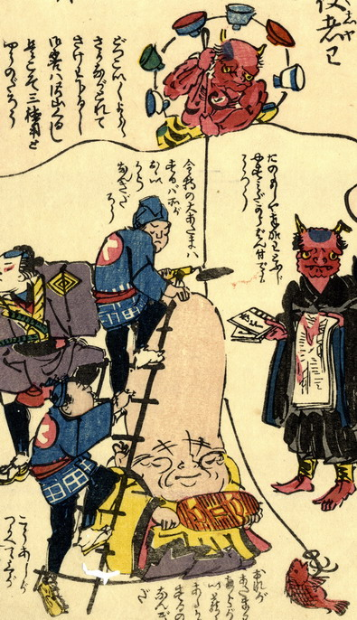

雷神が釣り糸を垂らして、鯛を釣り上げようとしている。雷神は赤い肌で角を2本生やし、虎皮の腰巻きをつけている。連太鼓のかわりに、食器を輪に連ねたものを背負っている。
出典：親書誌：U426_nichibunken_0156：地しんどう化大津ゑぶし；ジシンドウケオオツエブシ／日付：2010／資源識別子：U426_nichibunken_0156_0003_0000
Copyright (c)2010- International Research Center for Japanese Studies, Kyoto, Japan. All rights reserved.